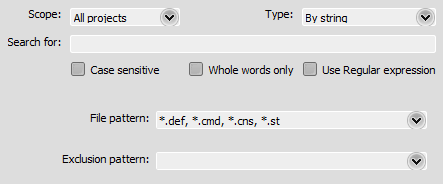

Advanced Search
This search function works on multiple files, including closed ones.
It supports multiple search modes, across multiple scopes, displaying all results in a friendly list (searches all occurrences at once as opposed to the quick search that searches one by one).
Scope
All projects
Searches in all opened Projects, including closed files.
Current project
Searches only in the current Project, including closed files.
Current file
Searches only in the current file (of the current editor).
Opened files
Searches in all opened files, in all open Projects.
File System
Searches in the specified directory.
Type
By string
Default search mode, using text from "Search for".
M.U.G.E.N. only
Lazy syntax fix
Searches for "lazy syntax". M.U.G.E.N. parser is a big shit, so people exploit the way it works to write non standard code (including Elecbyte itself, oh God), so this tries to fix that mess.
Search for
Text you're looking for. This is available only on "By String" searches.
Options
Case sensitive: doesn't ignore case, matching exactly what we're looking for.
Whole words only: only matches full words.
Use Regular expression: text in the "Search for" field is treated as a Perl-compatible Regular expression. You can include captures in replace mode by using %1, %2, %3, ...
Directory
Directory to search on. Only available in File System scope.
Patterns
Only available for scopes: All Projects, Current Project and File System.
File pattern: filter files by these wildcards.
Exclusion pattern: ignore files matched by this wildcard.